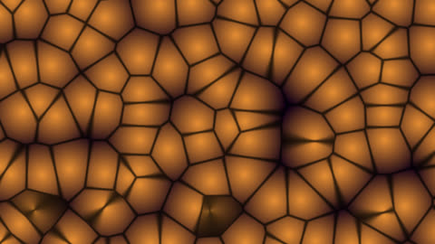

HomeAccueil / ExamplesExemples
Worley cellular noiseBruit cellulaire de Worley
Distance to the nearest grid point (nine neighbouring cells): cells, cracks and scales.Distance au point de grille le plus proche (neuf cellules voisines) : cellules, fissures et écailles.

CategoryCatégorie: NoiseBruit - cellulaire_worley.glsl - 23 lineslignes - File on GitHubFichier sur GitHub
In the program: Examples, choose it, Add to the list. Or copy the code into a file next to the program and drop it on the window.Dans le programme : Exemples, choisissez-le, Ajouter à la liste. Ou copiez le code dans un fichier et glissez-le sur la fenêtre.
CodeCode
cellulaire_worley.glsl
// SPDX-License-Identifier: GPL-3.0-or-later
// Copyright (C) 2026 Patrick JAILLET
// fr: Bruit cellulaire de Worley — Distance au point de grille le plus proche (neuf cellules voisines) : cellules, fissures et écailles.
// en: Worley cellular noise — Distance to the nearest grid point (nine neighbouring cells): cells, cracks and scales.
vec2 h2(vec2 p) { return fract(sin(vec2(dot(p, vec2(127.1, 311.7)), dot(p, vec2(269.5, 183.3)))) * 43758.5453); }
void mainImage(out vec4 fragColor, in vec2 fragCoord) {
vec2 p = fragCoord / iResolution.y * 7.0;
vec2 i = floor(p), f = fract(p);
float d1 = 8.0, d2 = 8.0;
for (int y = -1; y <= 1; y++)
for (int x = -1; x <= 1; x++) {
vec2 g = vec2(x, y);
vec2 o = 0.5 + 0.5 * sin(iTime + 6.2831853 * h2(i + g));
float d = length(g + o - f);
if (d < d1) { d2 = d1; d1 = d; } else if (d < d2) d2 = d;
}
vec3 col = mix(vec3(0.9, 0.55, 0.2), vec3(0.15, 0.05, 0.1), d1);
col *= smoothstep(0.0, 0.12, d2 - d1) * 0.7 + 0.3;
fragColor = vec4(col, 1.0);
}